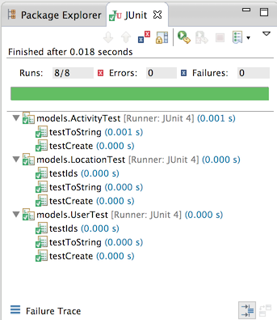
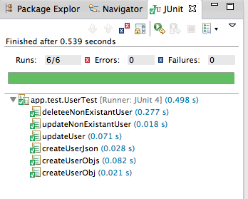

TDD Introduction
Test Driven Development


Test Driven Development has been among the most influential approaches in recent software engineering history. Here we look at its origins, principles and some of the important benefits of the approach.
Testing Pacemaker 2.0

Pacemaker 2.0 is a REST service, which we can test using REST clients.
XUnit Patterns

TDD is a rich and mature field, with its own literature and best practices. Here we review an attempt to capture some of this best practice into a set of higher level patterns.
Test Doubles

One of these patters in the 'Test Double' - also called 'Mock Objects'.
Mocking in Pacemaker 2.0

An exploration of potential opportunities for Mocking in Pacemaker 2.0. These could include a social subsystem, which could be concieved as an independent system, mocked out in advance of its development.
First Tests

The essential elements of TDD are fairly easy to grasp. The support libraries (xUnit) are relatively straightforward, and we can expect our IDE to provide direct assistance to using these libraries. Here we look at the facilities Eclipse provides to the JUnit library.
Annotations

Earlier JUnit libraries relied on Inheritance and specific design patterns to integrate the unit tests into runnable test suites. Modern JUnit relies on Java Annotations - which simplify test structure and enable more flexible structuring of tests classes.
Pragmatic Testing

One way of becoming familiar with TDD is to explore some simple examples of various strategies that might be employed in some simple examples. Here we look at useful examples from the Pragmatic series - which laid out much of the early exploration of TDD.
Pacemaker Tests

We try to apply some of these practices to the Pacemaker app we are building the labs. In general many of the tests are straightforward, however there are some subtleties in the serializer tests.
Writing Tests

A review of the basic structure of JUnit based tests, elaborating on the primary assert calls and annotations.
Right BICEP

Guidelines for Composing Tests phrased using the acronym: - Right, Boundary, Inverse, Cross-check, Errors & Performance.
C.O.R.R.E.C.T

More guidelines - this time the acronym is Conformance, Ordering, Range, Reference, Existing, Cardinality, Time.
Database Evolutions

If you are using the Play Framework - and any Relational Database - then database evolution will be a central concern and a key source of misconfiguration errors.
Lab-04

Equip Pacemaker with JUnit libraries and then introduce a range of tests to verify essential features. Correct issues that arise as a result of the tests, becoming familiar with the fail/pass/refactor/pass cycle. Review the outstanding command set of the application.
Lab-05
- Create a new project to host a version of pacemaker implemented in Xtend
- Build the project + its unit tests
- Explore the generated Java sources
Lab-09

Explore Database evolutions in Play. Build a test project, that communicates with the play service over http. Write some initial tests to verify the User class features
Lab-11

Introduce elements of a web UI onto the pacemaker. Rework (in the final archive) the ui into a simple app